夏天保养的重点是养心阴、宣肺气。
在四季中，夏天是属火的，人的心火也最旺。心火旺，人出汗比较多。汗为心之液，出汗多就会伤到心阴，人就会心烦、失眠，感觉心脏负担重。心火过旺，还容易上火。所以夏天要喝一些养心阴、补气、止汗、降心火的茶饮。
夏吃辛，养肺金。
肺主皮毛，天热时人体毛孔是张开的，最容易感受外邪。辛味发散解表，能帮助我们祛除外感病邪，不让它们停留在体内作怪。辛味的食物又分辛温和辛凉。辛温（姜、葱、茴香等）解风寒，辛凉（金银花、薄荷、桑叶等）解风热。夏天可以多用这些食物。
- 从立夏开始喝姜枣茶，三个人喝，每天早餐吃一个核桃壳煮鸡蛋、两碗顺时粥。十年前从电视节目里认识陈老师，真正跟老师顺时生活快两年了。我之前头上像顶了千斤，身上像灌了铅，现在神清气爽，身轻如燕，健步如飞。
——13群读者
- 夏季的姜枣茶、核桃皮煮鸡蛋，冬季的银耳枸杞粥，我母亲已坚持四年了，感觉真的挺好的！女儿也和姥姥一起喝，皮肤也见好，脸上的痘印都少了！
——媛媛
- 从去年秋天开始跟着允斌老师顺时养生，差不多一年了，今年夏天过得特别舒服，没有苦夏一说。一直坚持喝荷叶茶，身体变得轻松很多。贴了三伏贴，坚持喝乌梅汤，喝玫瑰红糖水，调理好为秋冬补做准备。只要顺应自然，顺应节气去吃，相信身体会越来越好。
——霄蓉
夏季全家保养小茶方：神仙姜枣茶
中医四大经典之一《伤寒论》中，有一个名方，叫作“桂枝汤”，被尊为古今“群方之首”。医界流传，“桂枝汤加减治万病”。这么神奇的药方，其实总共只有五味药，其中两味是生姜和大枣。
不仅如此，在《伤寒论》的113个药方中，有55个药方都用到了姜、枣，其中33个是姜、枣合用。
姜和枣都是良药，它们配在一起更是绝妙，有互补的作用：大枣生湿，生姜祛湿；大枣止汗，生姜发汗；大枣补气，生姜散气。配在一起使用，可以健脾护胃、补中益气，提高人体的抗病能力和自愈能力。
每年在立夏到三伏前一日这段时间，可常喝姜枣茶，排出寒湿，发散体内的病气，有助于安然度过盛夏。
神仙姜枣茶
【原料】
大枣6个、小黄姜3片。
【做法】
- 沸水冲泡，保温杯闷30分钟后饮用，可以反复冲泡。
- 有条件煮水40分钟以上饮用更佳。
【功效】
- 排寒湿，调理手脚冰冷、月经推迟，暖脾胃，补血，调节消化功能，增强抵抗力。
- 使手足皮肤柔润。
【姜枣茶的搭配】
- 气血虚的女性：多加红糖。
- 肠胃不好的小孩：加麦芽糖。
- 腹泻：加绿茶。
- 怕上火：多加枸杞子。
- 湿气重：加牛蒡、罗汉果。
- 一般的人喝到入伏之前。整天待在空调房间的人整个夏季都可以喝。
- 红枣最好把皮捏破再泡，更容易出味。
- 一定要热着喝，不能喝凉的。
- 过午不食姜。最好是上午把它喝完，不要超过中午。
- 内热重（比如上火、口舌生疮、咽喉肿痛等）、皮肤病发作期（比如湿疹）、女性孕晚期、女性生理期经量超多、伤口未愈合者不要喝。
读者评论
- 每年立夏都喝这个，喝了有好几年了。喝了特别舒服，按照老师的话说，就是发散了体内的邪气，夏天就比较好过，没有那么难受了。喝了这个不长痘了，我长的是成人痘，特别是下巴一直长，没有断过，从立夏喝到三伏前一天，不仅下巴的痘痘不长了，整个脸上都不长痘痘了，太神奇了。
——简单
- 我和家人是寒性体质，常喝的就是姜枣茶，喝了3年的姜枣茶（除了秋季）。第一年喝的时候还时好时坏的，第二年就好多了，今年再也没听见老公清嗓子的声音了，以前他吃点凉东西就咳得难受。我喝了后会出汗了，舌头也没以前白了，冬天没那么怕冷了。只是孩子住校不能常喝。现在姜枣茶成了我家的最爱了！
——瑰
- 我是2013年春天买的《茶包小偏方，喝出大健康》这本书，当时爱人正犯老胃病，他这胃病已经好多年了，每年春秋都会犯几次，严重时疼得整夜睡不着觉，我就想翻书看看有没有小茶方可以帮到他，看到姜枣茶有暖脾胃、调节消化的功能，并且材料家里都有现成的，我就每天早晨给他煮姜枣茶喝，第一天喝他就说胃里暖暖的，舒服。这样一直坚持喝，春天快结束时开始喝的，到秋天时他的胃病再没犯。连续喝了两年，没想到竟然把他多年的老胃病喝好了。到现在已经好几年了，他的胃病再没犯过。他自己都说太神了，他这胃病不知吃了多少药，进口的、国产的，中药、西药都没吃好，竟然让这么简单的姜枣茶给喝好了。
——伟
- 姜枣茶，2018年坚持从立夏喝到进伏，身体明显改善，头不昏沉了，便秘好转了，口腔溃疡基本消失了，身体很清爽。
——观心
- 特别分享一下姜枣红糖饮，喝了三天，肚子有一些咕噜噜的感觉，排便次数增加且不成形，从排便味道和排便后的感受等，感觉是排出了积存在身体里较久的东西，身体顺畅了一些。之后还感觉身体没那么怕冷了。以前别人穿T恤了，我还穿毛衣，喝了几天姜枣茶，我也能跟上天气的节奏，想换掉毛衣穿长袖了。
——微笑的心态
- 去年夏季按老师说的时间坚持每天喝姜枣茶，让我夏季总犯的头风病好了很多。以前夏季电风扇都不能吹，吹一点儿风就头晕、头痛得厉害，姜枣茶真的让我舒服多了。
——静静
- 食用两三年姜枣茶了，感觉自己畏寒怕冷的毛病有了很大的改善。以前不敢吃凉东西，比如香蕉、西瓜等，吃了肚子就疼或拉肚子，肚子里有很多的冷气，现在吃了凉东西也没有什么感觉。
——草莓芒果
- 我是寒湿体质，胳膊上容易长许多小水泡，又痒又痛。按照老师的方子，我坚持喝了一个夏天的姜枣茶，便溏、身体沉重、小水泡等症状现在都慢慢消失了。
——随缘
- 去年我是一个人喝了姜枣茶，今年邀请家里人一起喝。每天晚上把枣和生姜准备好，早晨起来就开始煮，等到快出门上班时喝满满的一杯。大家都反映很好，尤其我的丈夫，虚胖，姜枣茶和陈皮荷叶茶交替喝，感觉身体轻巧了许多。
——粒粒肥
- 对我来说姜枣茶最好用，我是气滞血瘀体质，之前每次来月经有很多血块。喝了几年姜枣茶，和老师一起顺时生活，现在没有血块了，月经还算准时。
——Jenny
- 姜枣茶，刚喝有点上火、牙疼，配合荠菜水喝就没事了。
——天道酬勤
- 姜枣茶加了罗汉果之后特别好喝，而且人很精神，很舒服。
——李曼婷
- 连续喝了3年姜枣茶，第一年喝完下巴痘痘就没了，手脚冰凉也有好转，抵抗力也强了，没有那么爱感冒，之前一受风就感冒，特别严重的那种，现在坚持了3年，再也没碰过感冒药。今年已经第4年了，继续！
——余墨有香
- 夏天喝几次姜枣红糖饮后，感觉往年夏季总出现的浑身无力现象再没有出现了。
——晓娜
- 姜枣茶，对于虚寒体质有很大帮助。分享给周围的人，也都在自己做，反响不错。
——布衣程
- 姜枣茶，去年坚持了一夏天，感觉棒棒哒，而且对瘦身有帮助，对体质也有很大的改善。秋冬时我的感冒明显少了。今年继续坚持！
——Angel
- 已经坚持喝了两年姜枣茶，感觉身体很舒服。今年继续坚持。
——一米阳光
- 昨天早上起床开始打喷嚏，空腹喝了姜枣茶，下午打喷嚏好点。今早接着喝姜枣茶，打喷嚏彻底好了。
——幸福团圆
- 去年坚持喝了两个多月，很舒服，手上起水泡、痒痒的毛病不治而愈。感恩遇见陈老师！这个毛病困扰我许多年，每到梅雨季就发作，水泡奇痒无比，一挠就破，流黄水，流到哪发到哪，找了好多大医院都无法根冶，没想到陈老师的姜枣茶给治得妥妥的！
——小叶子
- 喝了姜枣茶，身体有改善的人体会最深。去年喝了两个月，治好了胃病。感恩。
——木子Shirley
- 自测是寒湿体质，这几天热感痰多、流鼻涕，但双脚却冷得不行，喝了姜枣茶后，双脚居然不冷了，痰也更容易咳出来了！
——杨柳丽
- 按老师的方法喝姜枣茶，我感觉非常舒服，没有以前那种在空调房甚至吹凉风怕冷的感觉，现在我出差都带上养生壶煮姜枣茶。
——微笑
- 姜枣茶，已经成为我的最爱。在我的带动下，公公婆婆都开始喝了！现在天气炎热，孩子们总是嚷着要吃雪糕。经不住孩子们的死磨硬泡，我会同意他们吃，但是我也会加一个条件，就是吃完雪糕必须喝一杯姜枣茶。
——灭绝师太
- 从去年开始就跟着老师的提示，喝了整个夏天的神仙姜枣茶，居然瘦了5斤，太惊喜！老师说，喝姜枣茶瘦的不是脂肪，而是身体里的浊水。跟着老师用最简单的食材，把全家人的身体养得棒棒的！
——一缕晨曦
- 去年坚持煮了两个月的姜枣茶，全家人只有我一个人坚持每天喝下来了，最大的收获是去年夏天到现在一次感冒都没发生在我身上，而老公、孩子感冒了好几次，我觉得与喝姜枣茶是有密切关系的。还有就是以前温度稍微下降，就会哗哗地流清鼻涕。连续喝了两个月姜枣茶之后，至今都没再流过，我觉得肯定是姜枣茶的功劳，把我体内的寒气排掉了不少。
——may*wa
- 姜枣茶太神奇了，我家这几年每年从立夏开始喝姜枣茶到三伏天前一天，我体内的寒湿气排出去好多。以前不流汗，现在会流一点汗，夏天不会感觉那么热，我家夏天基本不开空调。
——玉兔
- 我去年连续喝了六十六天的姜枣茶，最明显的就是跟随我几十年的下巴长痘的情况好了，去年就没有痘了。感谢神仙姜枣茶！
——娜梦
- 姜枣茶太神奇了！我和老公都喝，原来总感觉很疲倦，现在我俩精神特好！体重也减下去了，气色也好多了。
——流心雨
- 从2014年第一次喝，两个月瘦了20斤，感觉整个人都清爽了，显年轻。去年生了二宝身体虚了，现在继续喝姜枣茶，又跟着老师顺时生活，我会越来越好。感恩老师。
——勤劳的小蜜蜂
- 我湿气特别重，这两年一直跟着喝姜枣茶，效果确实不错，明显能感觉到腿脚轻便了许多。感恩陈老师。
——ggsinging
- 一直坚持喝姜枣茶，我都是提前几天煮45分钟，然后放进冰箱保存，每天早晨喝。之后再把姜枣带到单位，一上午泡水喝。最明显的改变是舌头上的齿痕快要没有了，我的齿痕有二十多年了。每次喝完姜枣茶，身体暖暖的。
—— 阳阳
- 已经坚持喝姜枣茶半月有余，最大的收获是小腿（脚踝以上，小腿肚以下）不怕风了，以前吹风扇吹一会儿小腿就不舒服，感觉风飕飕地往皮肤里面钻，每次都要在小腿上搭件薄衣服。最近深圳天气热，天天吹风扇，我发现我没这个毛病了，七八年的老毛病，就这么无声无息地消失了。
——惠
- 老师，去年跟着您喝了一夏的姜枣茶，发现每年冬天的鼻塞和喉咙有痰好了80%，也没那么怕冷了，而且整个人瘦了一圈，真的效果太好了，爱你。还有我妈妈，也跟着一起喝了，然后她说今年冬天没有以前那么怕冷了。之前我的鼻炎，还有我妈妈怕冷的问题，都是怎么也治不好。
——郑琴
- 我是属于体热的那种，冬天很少穿棉衣，也很容易上火，早上姜枣茶加牛蒡和半个罗汉果，三煎三煮40分钟到1个小时，再也没上火，很舒服。下午核桃壳煮鸡蛋，加速排尿，身体轻松了很多，困扰我多年的妇科炎症就这样不知不觉好了！这可能就是老师所说的，湿热造成的妇科炎症和白带异常。
——倩儿
- 我喝姜枣茶十多天后身体的变化：①皮肤细腻了，之前毛孔粗大；②精力旺盛了，之前做一顿饭都累得不行；③大便变好了，之前都是溏稀或黏腻不顺。
——宁宁
- 我是觉得喝完姜枣茶后肤色好了，上班前化好妆到下班依旧精致（以前下午就脱妆了）。正常吃饭，瘦了3斤。大便痛快，每天早上两分钟内排完。
——17群读者
- 喝了十多天的姜枣茶，感觉大便通畅了。原来没少吃祛湿的药，没想到还不如跟随老师顺时生活来得明显，相信会越来越好的。
——云淡风清Q
- 喝神仙姜枣茶十六天，肌肤细腻了很多，精力旺盛了。
——Winning
- 陈老师，我突然发现冬天过去一半了，我晚上睡觉再没有穿袜子，而且一晚上脚都是暖烘烘的。不知道多少年了，每年冬天我都是穿袜子睡觉的，现在好了，实在开心！而且今年夏天是我过得最舒适的夏天，以往夏天热却不能吹空调，电风扇也不能吹，吹一点点风，就头痛、干热，非常难受。坚持喝姜枣茶后，今年夏天居然还吹了空调，家人也觉得好神奇呢。认识您这么多年了，您的每本书都买了，就是自己懒，这么好的食方都没有好好利用起来。这两年有了顺时生活日历，督促自己，进步不小。
——so what
- 我同事看我天天喝姜枣茶，就问我这个调理哪方面，我给她讲了好多姜枣茶的好处，她信我了，和我一起喝。还不到半个月，今早和我说：“姐姐，我喝姜枣茶有效果了。”我问她哪方面，她说她以前月经老不爱来，推迟，这回正常了！
——珍珍
- 立夏开始姜枣茶没断过，今年喜欢吹空调了，不怕冷了。往年怕在办公室待着，今年都不想出来。
——厚爱养生
- 我之前夏天不太出汗，而且皮肤特别凉，尤其是胃那里的皮肤，夏天摸上去都是冰的。我最近一直坚持喝姜枣茶，现在特别容易出汗，今天无意间发现，胃那块儿居然有了一些温度，虽然还不及周边的温度，但比之前好了许多！更加坚定我每天喝姜枣茶！
——阳光地带
- 从立夏那天开始煮姜枣茶和核桃壳煮蛋，到今天十四天，儿子昨晚不尿床了，我的赘肉也少了。虽然体重有些许上升，但感觉紧实了很多，整个人都是轻松的。
——朗诗德
- 喝姜枣茶两周，便便不黏马桶了，身体轻盈了。
——游志娟
- 姜枣茶是最棒的！今年立夏至入伏连续喝了七十六天，我爱人的胃炎没有犯，胃到现在都好好的。
——太阳当空照
- 我丫头喝了三天姜枣水（怕上火加了牛蒡、枸杞子、1/4罗汉果），今天看她背上、手臂上的红粒粒消退了很多，几乎没有了。
——爱家
- 从喝姜枣茶到今天，我下巴上再没长痘了。我也不知道是从什么时候起下巴开始长痘，后来就一发不可收拾，特别苦恼。还有我的脚后跟的老皮也有改善。
——澜羽
- 这款姜枣茶确实配得上“神仙”二字，从立夏喝到现在，不仅不上火，还发现胃口更好了，白天精神也更好了！每天上午11点之前喝完，完全不影响睡眠，一觉到天亮，早起排便更顺畅！
——海燕
- 自从立夏开始喝姜枣茶以后，我加了半个罗汉果和20克牛蒡一起煮，很好喝，现在身体很舒服，不会像以前整天昏沉沉的，湿气感觉少了很多，比以前精神好，有活力。
——读者朋友
- 真心觉得姜枣茶真的好，我从立夏第二天开始喝，偶尔让8岁的儿子喝几口，发现他晚上踢被子竟然没有感冒。昨晚有点热，孩子吹着风扇睡觉，我半夜去看他，他又没盖被子，风扇还在吹着，心想这次肯定逃不过了，谁知孩子早上起来并没有感冒的症状，如果是以前早就鼻塞、流鼻涕了。今天煮了姜枣茶早餐后又让孩子喝了几口，孩子中午放学回来，一点儿事也没有。跟着老师吃就能吃出健康，太棒了。
——期待
- 从立夏那天开始喝姜枣茶，（按老师说的，今年湿气重）姜枣双倍，同时加花椒7粒、陈皮、牛蒡等材料一起煮，每天上午12点前喝完。这几天明显感觉到身体没以前沉重了，特别是大腿那儿感受更明显。姜枣茶真是太好了，大爱陈老师。
——燕子
- 每次喝姜枣茶就感觉很轻松，想出门活动，就是不想躺着。要知道我可是一直身体很沉，无时无刻不宅在家里床上的人，而且能躺着绝不坐着。
——琼文
- 腿很痛，排寒湿那种很舒服的痛。几十年的老寒腿，感觉整个身体都在说谢谢，为自己、为身体感恩老师。
——读者朋友
- 老师这个姜枣茶真神奇，我从小就气血虚，而且一直有便秘问题，前阵子看到老师有个视频节目讲到便秘的几个方子，我都用过也没什么效果！自从喝姜枣茶那天开始，每天早上喝完1小时后就准点上厕所了！虽然感觉不太痛快，但也每天都排毒了。谢谢老师。
——芷玲zl
- 从立夏开始喝姜枣茶（加牛蒡和罗汉果），第二天下午，鼻子就长了一颗红得发亮又肿又痛的超大痘痘（我妈说我鼻子长痘那边塌下来像歪了一样），没有管它，继续坚持喝，痛了三天半，到今天小了很多。估计是喝姜枣茶，把那些湿热寒毒，通过长痘痘排了出来，今天喝完浑身舒畅。
——安净Okasa
- 今年我喝姜枣茶有五天了。一天排便两次，排的时候也很顺畅。排便后身体轻松多了，还发现头发也不油腻了！以前两天不洗头发，就很油腻，现在很清爽！我去年喝了两个多月，受益良多，冬天不怕冷了。
——李湖英
- 今年我喝姜枣茶一点没问题，去年喝的时候感觉有点上火，后来无意中看到老师说，姜可以换成陈皮，所以去年喝了一个夏天的陈皮枣水。今年提前买了小黄姜，比普通的姜更不容易上火，所以从立夏一直喝到今天，感觉很好！
——22群读者
- 以前胸部、腋下出汗就有异味，不是狐臭那种，用走珠止汗露后就不会有异味。后来我家夫君说，就要让它出汗，排毒，排出来就好了。我就停止用了。喝了几天姜枣茶和姜枣粥，出了很多汗，从此出汗就不再有异味，还带一点儿清香。
——何小玲
- 喝了3年姜枣茶了，闻着它的香味就来神，胃里暖暖的，浑身轻松。
——冷食速冻
- 我喜欢喝姜枣茶，只要坚持喝上一个月，效果非常明显，胖人能变瘦，瘦人能变胖。好处非常多，喝过的人都知道。就是要有毅力、要坚持！
——27群读者
- 我去年断断续续喝了一个月，胃寒的毛病改善很多。
——22群读者
- 吃了老师推荐的姜枣茶后，小朋友胃口大开。我多年的脚气也好了！以前夏天我都不能吹风扇，感觉身体凉凉的，现在好多了！
——向日葵
- 我妹妹告诉我，她头屑一年比一年厉害，而且满头油腻腻的，一出汗头发都黏成一绺一绺的，感觉就像头皮癣。我告诉她每天上午煮姜枣茶时，加上牛蒡和罗汉果，也就是6个红枣+3片生姜+7片牛蒡+1/4罗汉果一起煮。昨晚她跟我说，头皮屑已经少了很多，头发也不油腻了，她自认为这就是祛湿的效果。
——47群读者
- 姜枣+罗汉果+牛蒡茶喝了一个多月，上瘾了！困扰我十年来的大便问题解决了。以前是牛屎一样的大便，现在是香蕉形，很顺畅，特别舒服。今天突然发现之前一直有口臭的问题，这段时间也消失了。
——柏云
- 老公跟着我顺时养生，喝了3个星期的姜枣茶，脾胃很舒服，口气变好了，人瘦了，也精神啦！
——青豆
- 姜枣茶加黄芪、鱼腥草煮水，喝了一个月，坐空调公交不怕着凉了。今年特别热，一坐地铁、公交就怕被空调吹到，引起肩膀疼、背疼。现在每天坚持喝姜枣茶，吹空调时肩背不疼了，人太轻松了，好开心！！
——微风
- 连续四个年头喝姜枣，好处太多了！今年顽固的老公、妈妈也都被打动了，因为他们看到了我的变化。之前夏天一口冰都不敢吃，现在可以偶尔放纵一下；妈妈顽固性的便秘得到改善；老公喝过后，手心蜕皮也变好了，这都是身体自我修复，排湿毒的过程。每天出门保温杯内姜枣茶必备，不敢马虎！顺时生活，不负光阴！
——sunsan
- 喝姜枣茶，感觉腰围明显细了，脸上皮肤也紧致了。
——阳阳
- 坚持喝姜枣茶一段时间，这个月月经正常了，很开心。
——李秀玉
- 从立夏开始喝姜枣茶后，明显感觉手脚不那么凉了，早起也不鼻塞了，身体在一点一点地好转。
——齐继红
- 前一段时间下巴长痘了，喝了几天姜枣茶真的就好了，效果太好了。
——Sunny芹
- 早晨饭前喝了一杯姜枣茶，顿时觉得后背热乎乎的，像是背了一个小太阳。
——陆月荷
- 连续喝了十几天的姜枣茶，发现儿媳妇的脸色白嫩了许多。
——均旌
- 不懂事又爱臭美的年纪，我喜欢拔腋毛，每年夏天到了，拔那么一两回，几年过去，流汗多的时候总觉得自己一股狐臭味。喝了一个星期的姜枣茶，干活干得全身湿透，竟然没有味道。惊喜！惊喜！希望是真的，哈哈，今天的姜枣茶走起。
——10000个小时
- 刚刚煮了姜枣茶加罗汉果和鲜牛蒡。从立夏开始喝姜枣茶，三四天左右喉咙有些肿胀，还能忍受就没有断，坚持十天了。原本我的腰特别怕冷，稍有些凉意就会酸疼。这几天就没有感觉了。老寒腿也稍微好些了，但坐着不动，脚踝上方一点的地方还会酸疼，可能姜枣茶的威力还没到四肢末端，再坚持喝！加油，为自己打气。
——路
夏季中老年人通补五脏小茶方：二子延寿茶
“五月常服五味子，以补五脏气……六月常服五味子，以益肺金之气。在上则滋源，在下则补肾。”（孙思邈）这是古人补五脏的方法。
农历“五月”“六月”也就是阳历的6月、7月，正是夏天最热的时候，天热既伤阴又伤气，使得老年人容易气阴两虚，表现就是气短、口渴、浑身酸软、疲乏、不想吃东西、感觉心里烦热、凌晨容易醒来。
此时把五味子配上枸杞子一起喝，既可以养阴，又可以防止元气外泄，盛夏时老年人不论男女都适合。
这个茶方能补五脏，特别是补心、肝、肾。
二子延寿茶
【原料】
枸杞子60克、五味子60克、红糖20小块（约300克）。
【做法】
- 把五味子捣碎，与枸杞子一起分成10份，分别装入10个茶包袋。
- 每次取1袋，沸水冲泡，闷20分钟后饮用。
【功效】
- 补五脏之气，改善视力、听力，延年益寿。
- 可以改善暑热引起的疲乏、气短无力、失眠等问题。
- 防止皮肤粗糙。
- 也适合爱出虚汗的人常喝。
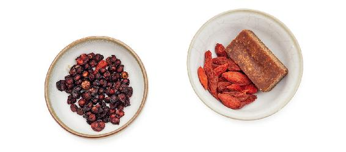
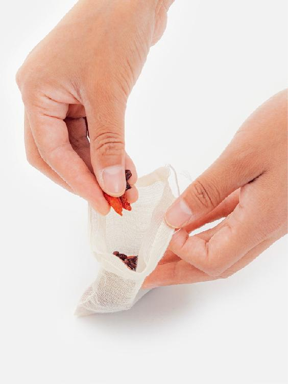
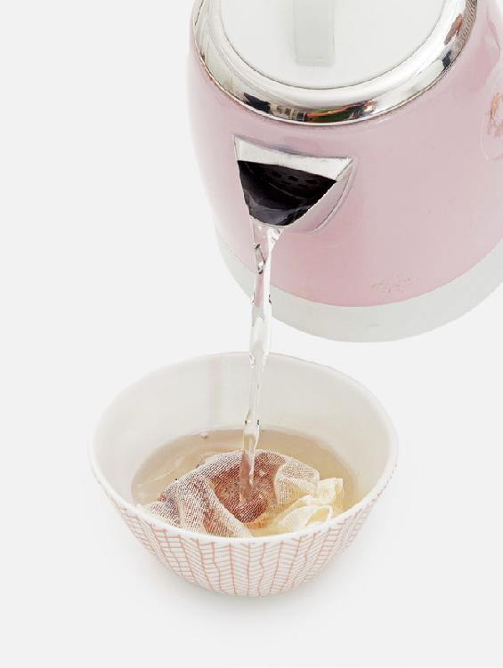
- 感冒、发热、有痰时不要喝。
- 吃中成药双黄连口服液时不要喝，否则影响效果。
- 泡温泉和蒸桑拿前饮用可以预防汗多伤气。
- 这个茶做起来很简单，买点枸杞子和五味子就可以了。第一次喝觉得味道实在不好，但是古人说“良药苦口利于病”，我相信允斌老师的方子。越喝越觉得有滋有味，最近觉得浑身有劲了，睡觉的时候不觉得心悸不安了，我知道这就是允斌老师说的给五脏补气的效果达到了。
——阳光宇
- 前段时间出汗太多导致心悸乏力，喝了二子延寿茶，吃桑葚干、喝乌梅汤，感觉改善多了！
——Sharon
- 夏秋的时候我总会给父母买点枸杞子和五味子，告诉他们这叫延寿茶。老人就乖乖喝了，枸杞子和五味子一起泡20分钟就可以了。老师的方子都简单方便，老人都可以学会，父母这两年都在喝。很明显的就是听力改善，耳朵没有以前背了，老母亲的眼睛不怎么爱流泪了，气色也好了很多！
——吕燕妮
夏季全家祛湿热小茶方：冬瓜皮荷叶茶
荷叶的功效很平和，能清火却不寒，能祛湿却不燥。夏天常喝些荷叶茶，既可以消暑利湿，又可以健胃和中，是适合大多数人的保健茶饮。
湿热重的时候，喝荷叶茶还可以加入冬瓜皮。对症调养篇《瘦身不要节食——调理六种不同肥胖体质的家传小茶方》一篇中讲过，冬瓜皮荷叶茶可以调理湿热型肥胖。而在三伏天，这道茶饮全家人可以一起喝，来清一清湿热。
冬瓜皮荷叶茶
【原料】
干冬瓜皮120克、干荷叶60克。
【做法】
- 吃冬瓜时把冬瓜皮削下来，晾干备用。再取新鲜荷叶晾干，也可以到药店直接购买冬瓜皮、荷叶的干品。
- 把冬瓜皮和荷叶分成10份，分别装入10个茶包袋。
- 每次取1袋，用沸水冲泡，闷20分钟后饮用。
【功效】
- 降脂利水，消除身体水肿。
- 清热祛湿，减肥。
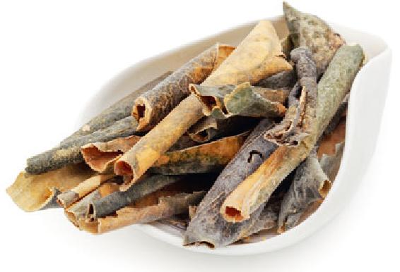
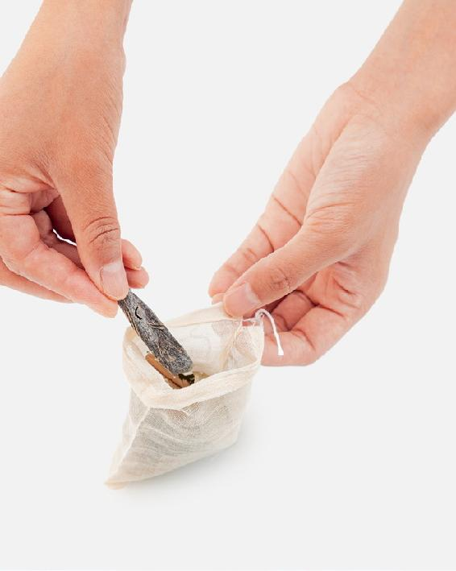
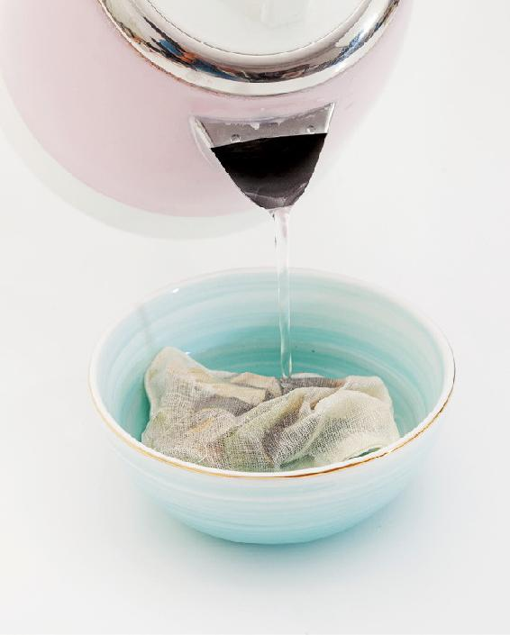
- 女性经期勿饮荷叶茶。
- 夏天煲冬瓜汤的时候，我们也可以学学广东人的做法，不去皮，连皮一起慢火煲。这样可以解暑、去心火，还能瘦身。
每年春夏我都会喝老师的这个小茶方。夏天时有一种被冬春的油腻油脂糊住的感觉，眼睛睁不开，四肢沉重没精神。这时候喝冬瓜皮荷叶茶百试百灵，喝几天身体油乎乎的感觉就不见了，身体轻了很多，水肿消退，不上火了，眼皮也不耷拉了，到下午也是精精神神不犯困。跟着老师顺时生活，感觉太好了。
——15群读者
盛夏全家消暑降温茶：银花甘草茶
小时候，每到夏天，我们在外面玩得满头大汗地跑回家，桌上必然放着一壶银花甘草茶，是妈妈泡给全家人消暑的。倒一杯喝下去，又清香又甘甜，深深地体会到了什么叫作沁人心脾，顿时就觉得全身清凉，一点儿不热了。
银花甘草茶
【原料】
干金银花100克、甘草30克。
【做法】
- 把金银花和甘草分成10份，分别装入10个茶包袋。
- 每次取1袋，沸水冲泡，闷10分钟后饮用，可以反复冲泡。
【功效】
- 预防流行性脑脊髓膜炎（简称流脑）、流行性乙型脑炎（简称乙脑）等传染病。
- 清热解毒、解暑。
- 预防热痱。
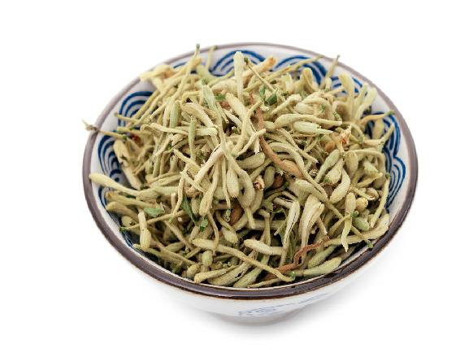
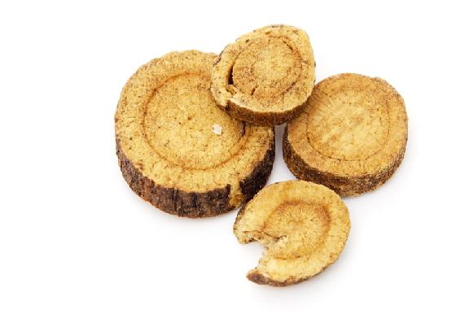
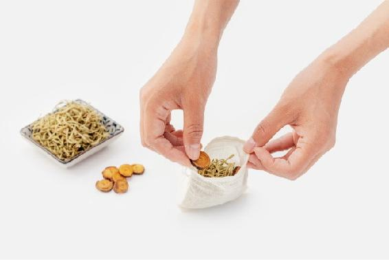
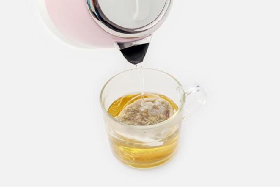
- 因为吹空调而得了风寒感冒的人，暂时不要喝，风热感冒可以喝。
- 这道茶适合全家老小喝，整个夏天喝清凉消暑，又能抗病毒。
- 泡茶的时候，不要用手去抓金银花，会沾染手的汗和油，泡的茶容易坏。用干净的茶匙或夹子去取金银花就行了。
读者评论
- 前几天孩子她爸牙龈肿痛，口腔溃疡，感觉上了火。喝了金银花甘草茶，几天就好了。
——枫
- 6岁侄女身上多年来起很多小红疙瘩，小手每天不停挠来挠去，看着很心疼却没办法。去医院医生让涂含激素的药膏，害怕激素对孩子有伤害就没治疗。孩子平时爱吃海鲜、喝酸奶，出汗时身上红疙瘩更严重了！老师茶包书中推荐夏天喝金银花甘草茶，我相信对身体有好处，让小侄女也喝。仅仅喝了1袋，两天时间孩子身上的小红疙瘩都没有了，后来也没复发。真没想到喝了1袋茶包就把大问题解决了！仔细看老师的书，原来金银花对皮肤病有疗效！
——暄
夏季手脚心发热，喝天生白虎饮
中医有一个名方，叫作“白虎汤”，是治热病的。西瓜的功效，就相当于一剂温和的白虎汤。当感觉全身发热、出汗、口干舌燥，喝一杯西瓜汁，可以退热。所以古人把西瓜称为：天生白虎汤。
如果不小心买到了生西瓜，别着急，用下面方法就可以让生西瓜变成甜甜的西瓜汁了。
天生白虎饮
【原料】
西瓜1个、白糖2勺。
【做法】
- 在西瓜的顶部切开一个小口，倒入2勺白糖。
- 用筷子插进去搅动，尽量把瓜瓤搅碎，让白糖和瓜瓤搅拌均匀。
- 把切开的瓜皮盖回去，把西瓜放入冰箱或放在阴凉处1小时，等到瓜瓤都化成汁，再把西瓜汁倒出来饮用。
【功效】
- 缓解暑热引起的心烦口渴、手脚心发热等现象。
- 清血热，降心火，利小便。
- 缓解血热导致的皮肤红疹。
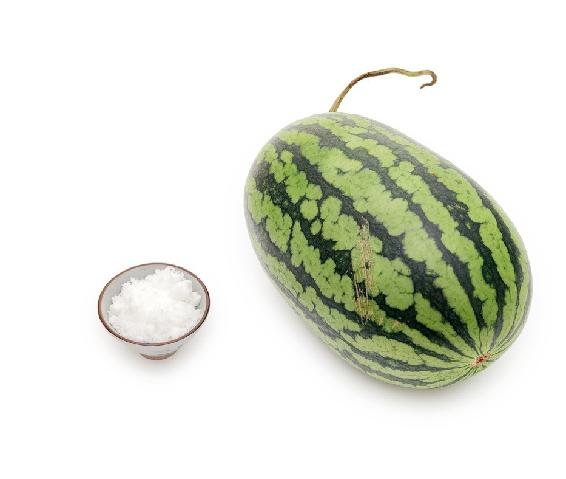
读者评论
偶然看到陈老师的这个方子，只觉得好玩就学着做起来。孩子军训回来吵着要吃冰西瓜，就给他做了这个西瓜汁，喝了一大杯就老实安静了，告诉我很舒服，浑身不发烫了，脖子上的小红疹子也消了。
——梦醒时分
夏季全家预防肠胃型感冒小茶方：杏仁怀香饮
小茴香在古时有个好听的名字，叫作“怀香”，它有独特的香气，这种香气经久不散，加热以后更加浓郁。炖肉时放一点小茴香很提味，还能帮助消化。
小茴香能暖胃，可以调理慢性胃病，对于胃寒引起的慢性胃炎、胃溃疡、胃下垂、胃神经官能症（胃肠功能紊乱）等有特效。
夏天人们贪凉，吹空调或吃生冷食物过多后，容易引起肠胃不舒服，甚至得肠胃型感冒，喝这道茶可以预防。
杏仁怀香饮
【原料】
甜杏仁500克、小茴香100克、麦芽糖或红糖适量。
【做法】
- 小茴香、甜杏仁分别放入无油的铁锅，用小火炒香，然后把小茴香打成粉，甜杏仁切碎或磨成粉。
- 晾凉后，装瓶密封，放入冰箱冷藏，可以放一个月。
- 每次取2勺，加少量麦芽糖或红糖，放入随身杯，冲入开水，搅拌均匀饮用。
【功效】
- 预防夏季感冒。
- 理气和胃。
- 淡化晒斑。
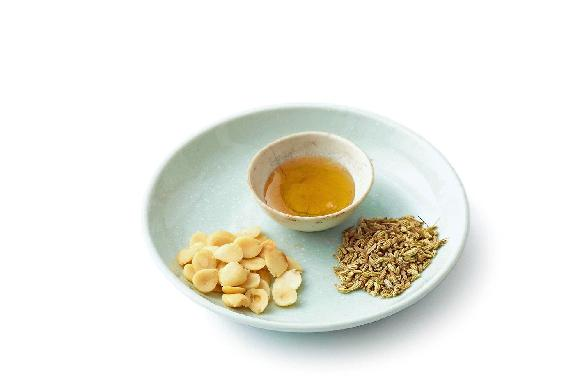
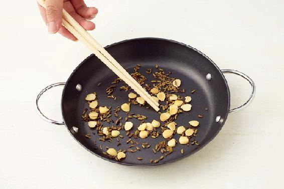
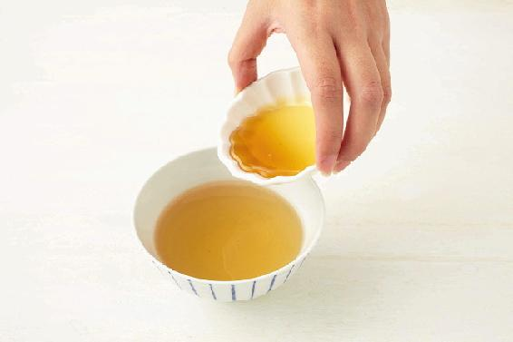
杏仁要用甜杏仁，不要用苦杏仁。苦杏仁是一味很好的中药，但是有微毒，一般只能入药，平时不能多吃。
哪种人适合吃小茴香？
胃寒的人，脾胃消化能力弱，消化不良甚至胃痛、呕吐清水。
哪种人不适合吃小茴香？
胃热的人，容易上火，比如口干、口苦、口舌生疮、牙龈肿痛、小便黄、大便秘结，严重时会胃痛、呕吐酸水，有的人会感觉特别容易饿，吃很多却吸收不到营养。
读者评论
- 别人都是冬天容易感冒，我却老是夏天感冒。朋友去年给我推荐了陈允斌老师的杏仁怀香饮，让我立马开始喝，说可以预防夏季感冒。我一开始不相信，结果不知不觉一个夏天过去了，我真的没有感冒，立马成了老师的粉丝，今年夏天继续喝起来。
——21群读者
- 这两天身上又湿又热，想起去年试了甜杏仁拌茴香效果不错，该吃起来了！成都外面很少卖茴香菜的，就试试抓了把小茴香放在花盆中，没想到这么好种，长势喜人，这下不用担心没的吃了！
——22群读者
夏季心烦口渴，总想喝冷饮，喝鲜冬瓜汁
夏天的暑气会使人上心火，感觉烦躁、口干、心烦。特别是小孩子，总想吃冰激凌、雪糕，喝汽水这些冰凉的东西。
这些都是心火过旺的表现。舌为心之苗，心火过旺首先表现在舌尖发红，就想让它凉快一下。喝点冬瓜汁，就会感觉凉快许多，心里也舒服了。
鲜冬瓜汁
【原料】
新鲜冬瓜、白糖或蜂蜜。
【做法】
- 冬瓜切小块，加少量清水和白糖或蜂蜜一起，放入榨汁机打成果汁。
- 用纱布挤出冬瓜汁，放入随身杯，外出时饮用。也可以放在办公室的冰箱里冷藏，随时取出饮用。
【功效】
- 调理心烦、口渴。
- 消暑降温，去心火。
- 涂抹在鼻子上可以促进酒糟鼻周围的脓疱愈合。
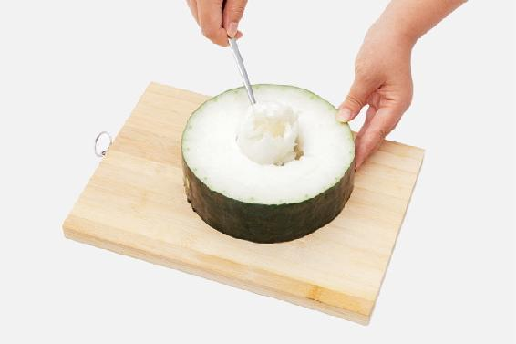
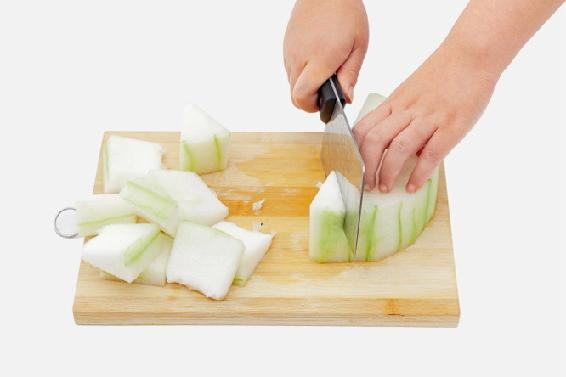
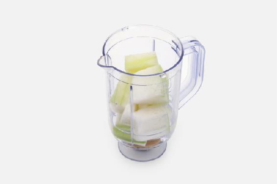
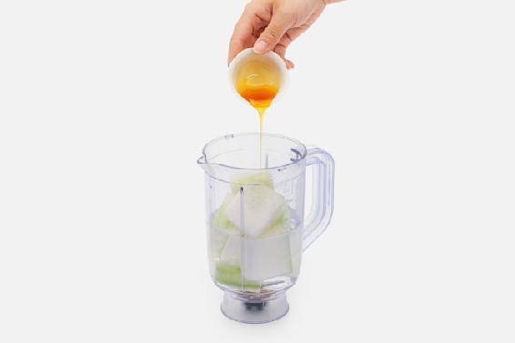
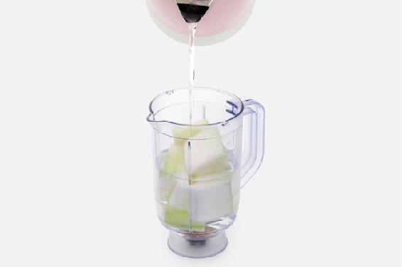
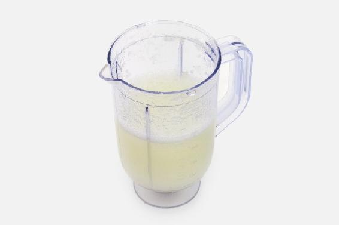
读者评论
- 舌头溃疡时用冬瓜蘸白糖，这是我亲自用过的，效果显著啊。
——岁月荏苒
- 前天发现女儿嘴唇上火，昨天买了冬瓜榨汁给她喝，到晚上发现好了，真的神奇！跟着陈老师养生，总有意想不到的收获。
——46群读者
- 我女儿舌尖发涩，吃东西无味，我对照书，给她喝了冬瓜汁，很快就好转了。
——46群读者
夏季皮肤长疖子和青春痘，喝丝瓜皮饮
丝瓜皮是清热毒的，夏天容易长疖子或痘痘的人，可以直接用丝瓜皮煮水来喝，清热败火的效果很好。如果是红肿明显的痘痘，可以配合丝瓜蒂茶（见本书对症调养篇155页），同时用丝瓜皮外敷追脓，痘痘就能瘪下去。
丝瓜皮饮
【原料】
新鲜丝瓜、蜂蜜适量。
【做法】
- 把丝瓜放在加面粉的清水中泡10分钟，清洗干净。
- 用小刀轻轻地刮下丝瓜皮表面薄薄的一层绿衣，晒干。
- 每次取一小撮，放入随身杯，沸水冲泡，闷20分钟后，调入蜂蜜饮用，可以反复冲泡。
【功效】
- 防治皮肤长疖或青春痘。
- 清热、解毒、消肿。
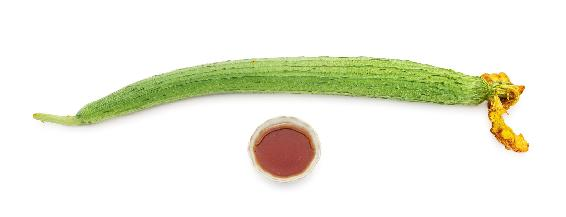
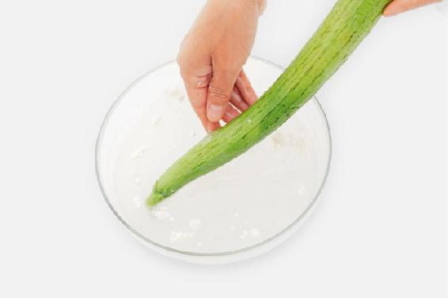
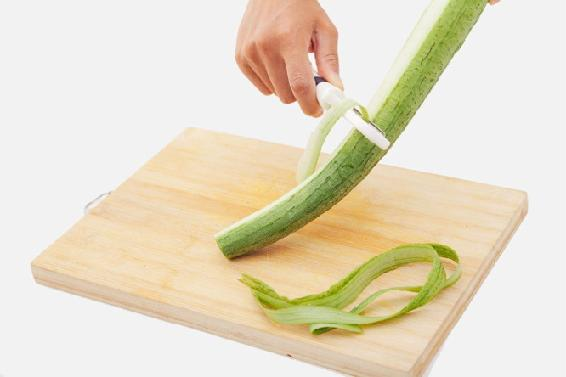
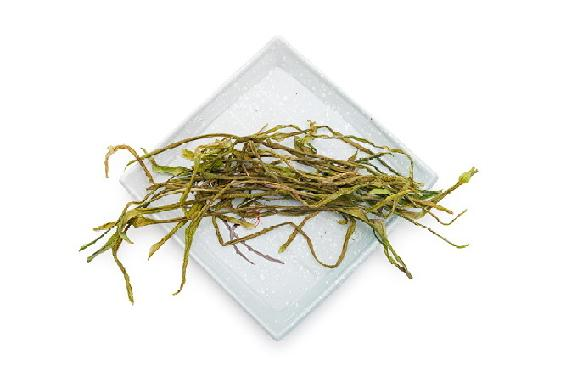
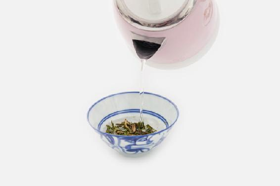
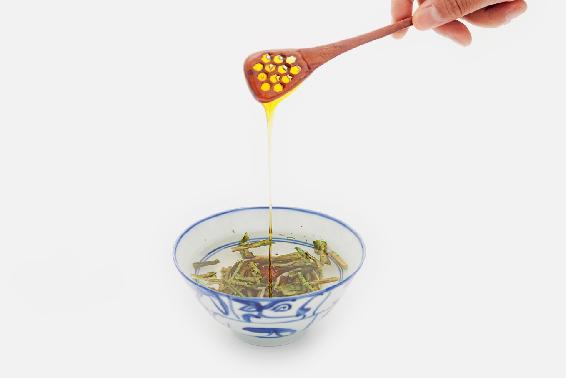
允斌叮嘱
丝瓜特别寒，阳虚的人不要多吃，正在腹泻的人也不要吃。
前几天额头上起了一个很大的疙瘩，又红又疼。前天吃丝瓜，想起丝瓜皮好像陈老师讲过，用来敷熟了的疙瘩，能把脓水敷出来，我就马上敷了。果然还真的把脓水一点点敷出来了，也不红不疼了，疙瘩越来越小了。老师的方法真的好好！
——24群读者